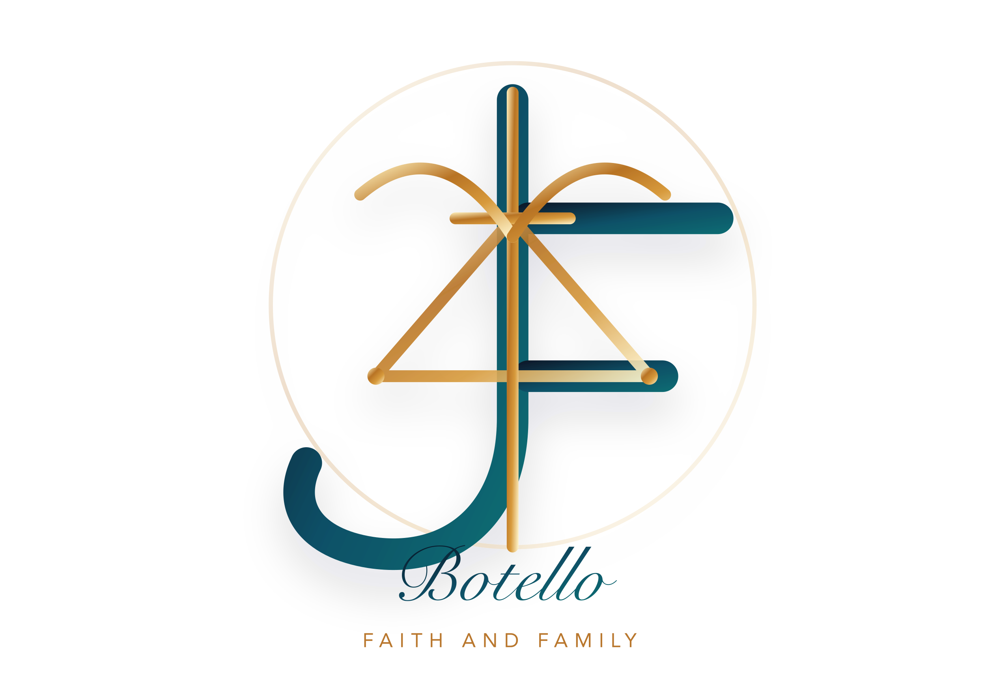

CRUX SACRA
A Family Adventure of Faith
Una aventura familiar de fe
Created by Jesús B. · Ideas by Elías B. · Coding/Art by Codex
World / Mundo
Difficulty / Dificultad
Hero / Héroe
Companion / Compañía
Help / Ayuda
Goal / Objetivo
Collect every Crux Sacra before the villain corrupts one. Rescue the level, protect the children, and unlock new worlds and redeemed characters.
Junta todas las Crux Sacras antes de que el villano destruya una. Rescata el nivel, protege a los niños y desbloquea nuevos mundos y personajes redimidos.
Computer Controls / Computadora
- Arrow Keys / WASD
- Move the hero / Mover al héroe
- Space
- Crux Sacra prayer light / Luz de oración Crux Sacra
- F
- Holy Water spray / Agua bendita
- R
- Rosary power, clears enemies / Rosario, limpia enemigos
- P
- Pause or resume / Pausar o continuar
- Q
- Quit to character selection / Salir a elegir personajes
- Enter
- Activate focused menu button / Activar botón seleccionado
Phone & Tablet / Celular y Tableta
- Left stick
- Move the hero / Mover al héroe
- Tap level
- Move toward touched place / Caminar hacia donde tocas
- Ⅱ
- Pause / Pausa
- ★
- Holy Water spray / Agua bendita
- ○
- Rosary power / Rosario
- ✚
- Crux Sacra prayer / Oración Crux Sacra
Powers / Poderes
Crux Sacra: pushes the villain back and protects glowing crosses. Holy Water: stops projectiles and fire, but has limited uses. Rosary: rare power that clears enemies from the level. Stars: add one Holy Water use.
Worlds & Villains / Mundos y Villanos
- Colorado Springs: El Tacalache throws rats and cockroaches.
- Juárez: El Cucuy del Desierto throws cactus thorns and sand skulls.
- US East: The Swamp Shadow sends mosquito swarms and swamp bubbles.
- El Paso: El Chupacabras attacks with claw slashes and shriek waves.
- Guadalajara: El Charro Negro throws cursed horseshoes and black lasso rings.
- El Rancho: La Aparecida de la Carretera sends road dust ribbons and phantom lanterns.
- Mexico City: La Llorona sends ghostly tears and ghost hands.
- Bedtime Rooms: El Coco throws shadow socks and closet whispers from Colorado, Alabama, Juárez, El Paso, Guadalajara, and Mexico City bedrooms with crucifixes, beds, roperos, and nightlights.
- Holy Land: The Devil throws dark chains and temptation flames. This world unlocks after the regular worlds.
- Saints Bonus: a preview world after the final world.
Hazards / Peligros
The villain can make a Crux Sacra glow red. Save it before it explodes. Fire can be removed with Holy Water. Thunder changes by world and cannot be stopped by Holy Water or Rosary, so move away when the warning rings appear.
Credits / Créditos
Created by / Creado porJesús B.
Ideas / IdeasElías B.
Coding & Art / Código y ArteCodex, based on the original ideas of Jesús B. and Elías B.
AI Helpers / Ayudantes de IAOpenAI Codex, OpenAI Image Generation, and OpenCode, guided and approved by Jesús B.
Family Playtesting / Pruebas en familiaJesús B. and Elías B.
Edition / Ediciónv1.1 · Character Roster Update · 2026
Worlds / MundosColorado Springs · Juárez · US East · El Paso · Guadalajara · El Rancho · Mexico City · Bedtime Rooms · Holy Land · Saints Bonus Preview
With gratitude / Con gratitudTo God, the Guardian Angel, Saint Michael the Archangel, and the family who inspired the adventure.
Level Complete
La luz protegió a los niños.